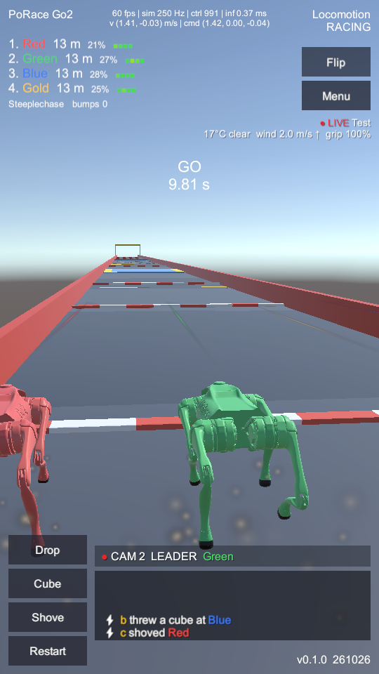
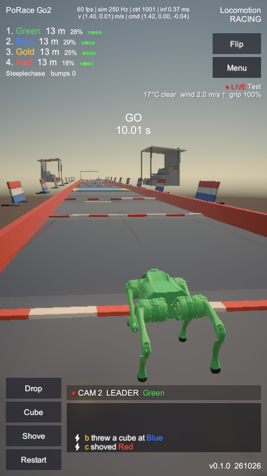
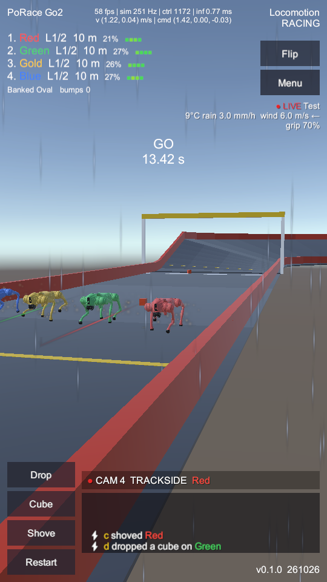
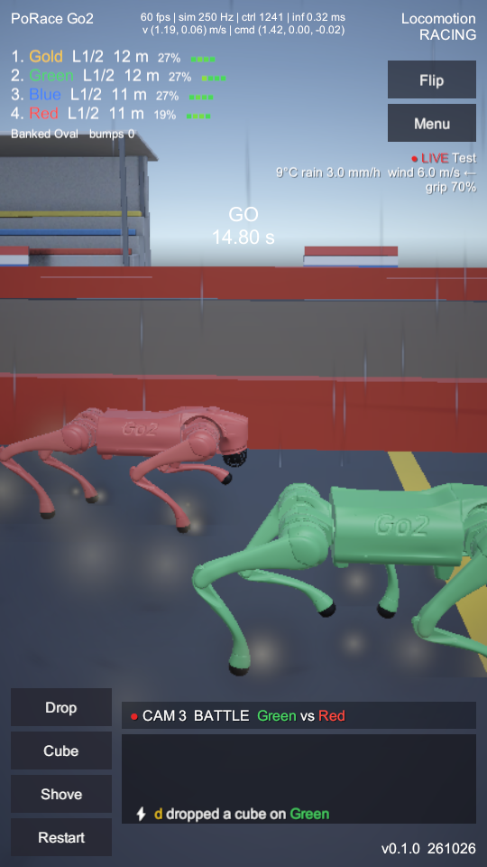
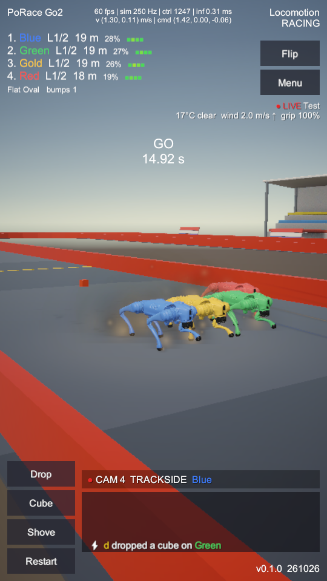
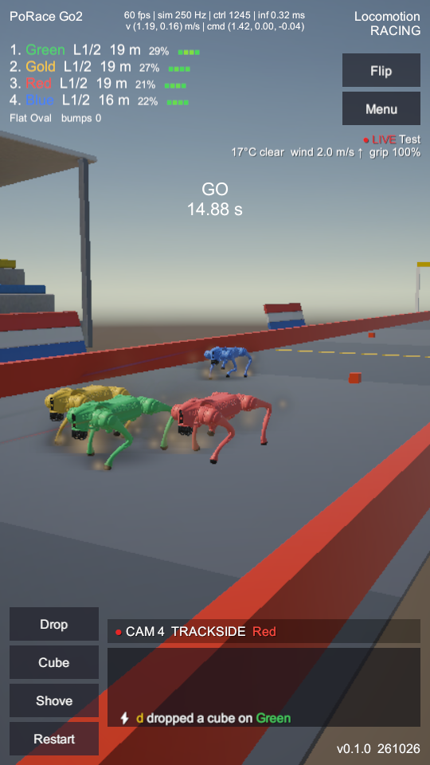
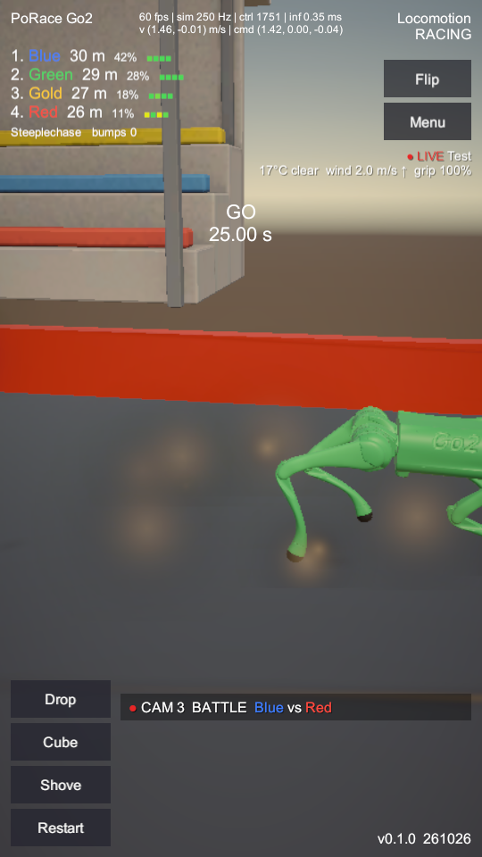
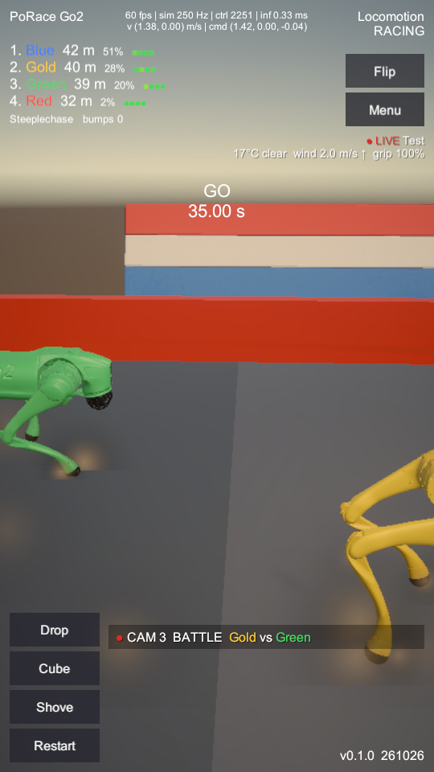

Phase H: graphics and audio pass
Before = build of the pre-Phase-H code (adb43ba broadcast scripts, current scenes). After = current working tree. Same seed (3), same chat-script hazards (cube drops, throws, shove), same fixed weather, 540×960 portrait, desktop player. Red solid boxes are new; blue dashed boxes mark what they replace.
What changed
| Item | What | Where |
|---|---|---|
| H.1 | Contact impulses from mjData every 4 ms (J = reduced mass × closing speed); dust bursts and sparks scaled to impulse, impact rings, trauma camera shake (offset removed before FollowCam smooths, so shake no longer drifts the camera); GfxTier budget switch, -gfx mobile|pc | ContactImpulse, ImpactFx, GfxTier, RaceDirector |
| H.2 | Impact sound crossfades tap / thud / slam by impulse, plus a surface layer (rail clang, robot clank, obstacle knock); footsteps per surface plus a wet squelch; scrape loop per racer driven by foot slip; logarithmic rolloff, distance low-pass, Doppler on servo whine; arena reverb zones at the stands | RaceAudio, BroadcastBuilder |
| H.3 | Strain: HDR rim glow plus fill on hot leg links (custom shader, attached only while hot), REDLINING pulse, grime from accumulated hit impulse; wear goes to the telemetry summary and Azure row | StrainMonitor, StrainRim.shader, RaceTelemetry |
| H.4 | Post-processing turned on (it was off): per-map grade, neutral tonemap, bloom; INCIDENT slow-motion look and a finish bloom kick. PC: soft-shadowed spotlight on the director's subject. Mobile: only the subject casts a shadow, blob shadows for the rest, shadow distance 50 → 30 m | BroadcastPost, BroadcastLighting |
| H.5 | Scuff marks where feet slide and bodies or cubes land, laid on the contact plane, pooled (24 mobile / 64 PC), fading out | ImpactFx, PoRaceDecal.shader |
| H.6 | Blender grandstand and advertising board, LOD0 / LOD1, baked colour × AO texture, placed along every track (visual only, no colliders) | tools/blender/trackside_props.py, Assets/Art |
| H.7 | FrameProbe (-frameProbe 20): whole-frame cost with vsync off; the Mobile quality level is now included on Standalone so -gfx mobile also uses the phone's URP asset | FrameProbe, QualitySettings |
1 · Steeplechase, 25 s, LEADER camera

fixed dust specks on every stride

H.6 grandstand (LOD0)
LOD1
H.6 boards
HUD unchanged (overlay, no post on text)
2 · Banked Oval in rain (3 mm/h), 30 s


stand + reverb zone
wet-track puffs; squelch layer on the same steps
3 · Mobile tier on desktop (-gfx mobile), Flat Oval, 30 s


blob shadows, subject keeps the real one
stand LOD + AO bake
4 · Close camera, steeplechase 40 s and 50 s

baked AO: tiers read as solid

foot puffs: still noticeable this close
Measurements
| Check | Result |
|---|---|
| Frame time, desktop GPU, vsync off (FrameProbe 20 s after 15 s warm-up) | PC tier: oval 4.85 ms mean / 7.18 p95 · steeple 4.11 / 6.06 Mobile tier: oval 3.38 / 5.11 · steeple 3.21 / 4.92 Budget 16.7 ms. No baseline number (the before build has no FrameProbe). Not measured on a phone: no Android device was connected. |
Sim untouched (headless -raceTest -seed 3, Flat Oval, no hazards) | Same finish times before and after (Gold 153.39 s, Blue 155.68, Green 155.91, Red 156.37). Runs with chat hazards differ even baseline against baseline, so they are not a determinism check. |
| Impact detection (headless, one race) | Oval: 19,179 foot (mean 1.27 N·s), 372 robot–robot (0.78), 0 body Steeple: 17,584 foot (1.13), 423 body (1.55, max 16.2), 8 robot–robot |
| No PhysX | 0 Rigidbody / Collider components in all four race scenes after the rebuild |
| Player logs | No exceptions in any after run (PC, mobile, rain) |
Notes and deviations from the proposal
- Scuffs and rings use pooled quads and particles with a custom decal shader, not URP Decal Projectors. Projectors need a renderer feature, and a renderer feature whose resources went missing in builds is what blanked the desktop players in G.0.
- Strain glow is a custom additive shader, not URP Lit emission. A keyword enabled only at runtime is stripped from player builds. The glow only shows on hot legs (above about 60 % effort), so none of these stills caught it.
- Mobile cascades were already 1 (the proposal said 4 → 2). Only the shadow distance changed, 50 → 30 m.
- Two fixes found during capture: foot dust started as a brown band and was cut twice; the grandstands first faced away from the track and blocked TRACKSIDE shots (FBX export maps Blender +Y to Unity −Z), and are now turned round and 2.5 m past the bank edge.
- Audio can't be judged from screenshots. Sounds were synthesised and wired, but nobody has listened to them yet.